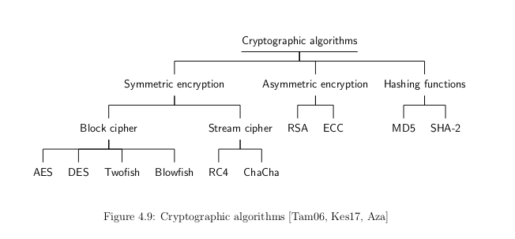

[17.02.2019] Cryptography overview¶
Cryptography is mostly associated with the development and creation of mathematical algorithms, which are used to insure various security aspects See [Tam06][Oak18]. It is the cornerstone of modern communications security and is based on various mathematical concepts and theories such as: number theory, computational complexity theory and probability theory [Kes17]. The following post provides a quick overview of various cryptography concepts such as encryption, decryption and hashing.
Types of cryptographic algorithms¶
Cryptographic algorithms can be classified according to various criteria [Kes17]. One can distinguish them, according to the number of their deployed keys, which results in the following three categories:
- Secret Key Cryptography (SKC): or “Symmetric encryption”, uses one single shared key for both encryption and decryption to provide privacy and confidentiality [Kes17][Tam06].
- Public Key Cryptography (PKC): or “Asymmetric encryption” uses one keys couple: A public key for encryption and a private key for decryption [Kes17]. It is essentially used for authentication, non-repudiation, and key exchange [Tam06].
- Hash Functions: Irreversible mathematical transformations that generates a checksum/a digital fingerprint used for checking the data integrity or none-corruptness [Kes17].
Encryption vs Hashing¶
Encryption transforms a plain-text into something unintelligible called cipher-text using a key. The essential thing about encryption is that it is reversible [Oak18]. A unique cipher-text & plain-text couple can be determined using encryption, decryption and a key. Encryption is used essentially in confidentiality. For example, in an electronic exchange, you encrypt messages to prevent a third party lacking the key from reading the messages [ssl2buy18].
Hashing, unlike encryption, transforms the input data into a (usually fixed length) sequence of characters often called checksum/hash-sum or a tag. Moreover, hashing is a one-way operation that does not require a key and so the quality of a hashing algorithm depends on the uniqueness of the generated hashes. Two different messages with the same hash values are a case of “collision”. Hashing is used to maintain data integrity [ssl2buy18]. For example, if a hash sum is generated based on a message text, any future changes on the text would be detected due the mismatch between the previously generated hash and the current one.
Encryption and Decryption¶
Encryption transforms a plain-text into a cipher-text using an encryption key. The process of reversing this operation uses also a key and is called “decryption” [Kes17]. These operations can be explained by the following formulas: \(C=E_{k}(P)\) and \(P=D_{k}(C)\), where P = plain-text, C = cipher-text, E = the encryption method, D = the decryption method, and k = the key [Kes17]. There exist several types of encryption (symmetric/asymmetric) and several ciphering techniques (block/stream) and modes etc [Kes17]. The major differences between those will be explained in the following sections.
Symmetric Encryption¶
In secret key cryptography, both parties (a sender and a receiver for example) agree on a single secret (shared) key for encryption and decryption [Kes17]. The major concern in this case is to securely share the key between the two peers or else the whole system is jeopardized [Tam06]. The key management for this encryption is troublesome, especially if a unique secret key is used for each peer-to-peer connection, which results in n(n-1)/2 total number of keys for n-nodes [ssl2buy18][Oak18]. Symmetric encryption schemes are generally defined as stream ciphers or block ciphers [Tam06].
Asymmetric Encryption¶
It also known as Public Key Cryptography (PKC) [Kes17]. It has been considered the most significant development in cryptography in the last 300-400 years. PKC employs two separate keys:
- The public key: which is used to encrypt data by anyone.
- The private key: which is kept secret and is used to decrypt data.
This double key feature surmounts the symmetric encryption problem of managing keys, but also makes it mathematically more prone to attacks [Tam06]. Moreover, this duality provides authentication and non-repudiation with the assumption that the private key is kept secret [Kes17]. However, asymmetric encryption techniques are way slower than symmetric techniques, and they require more computational processing power [ssl2buy18][Kes17].\ It is obvious that each of these two approaches (symmetric/asymmetric) provide a set of advantages and limitations, therefore a hybrid scheme is the best compromise. Such scheme would apply asymmetric encryption for the secret key distribution and symmetric encryption for the generic data exchange.
A summary of cryptographic algorithms¶
There are several practical implementations and algorithms of the aforementioned concepts. Some of these are widely used standards defined by the National Institute of Standards and Technology (NIST) such the Advanced Encryption Standard (AES) and the Secure Hashing Algorithm (SHA) etc. The most known algorithms are summarized below:
{kind=link}